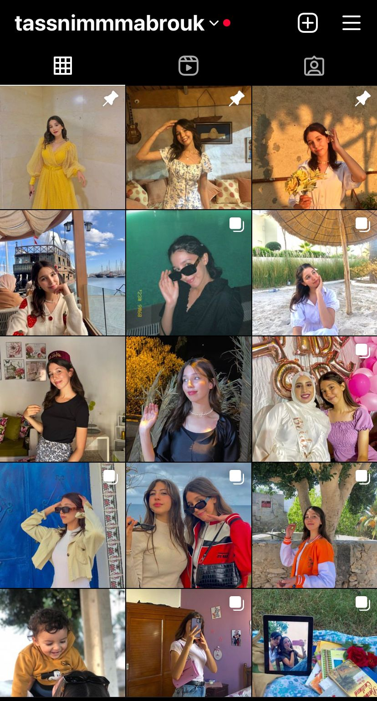
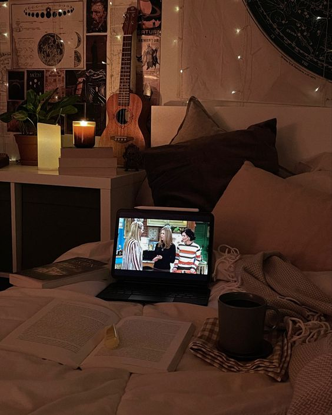

i"m a girl who loves taking pictures and posting it on social_media , i started doing that since i was 12 years old i always come up with ideas i even try to wear outfits that match the background and suit the vibe you can check my instagram to see all of my favorite photos , also i love taking tiktok videos like lip-syncing and joining different trends , well my first tiktok video was in 2015 and I'm still obsessed with it till now I find peace, joy and excitement in making videos .
watching movies ,tv shows of any kind always bring me back to life if i'm happy i watch a movie even if i'm sad absolutly i'll watch a movie i started my journey as a movies fan when i was 12 years old ,thanks to movies im being abel to write a script with a language other than arabic, i learned english ,spanich ,japanese even korean .
